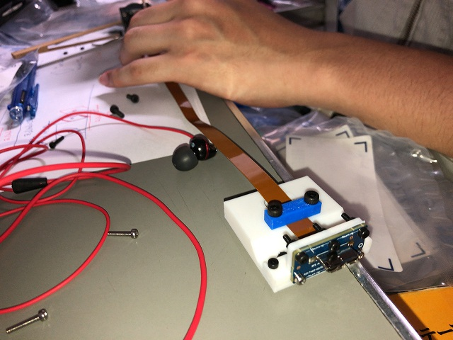
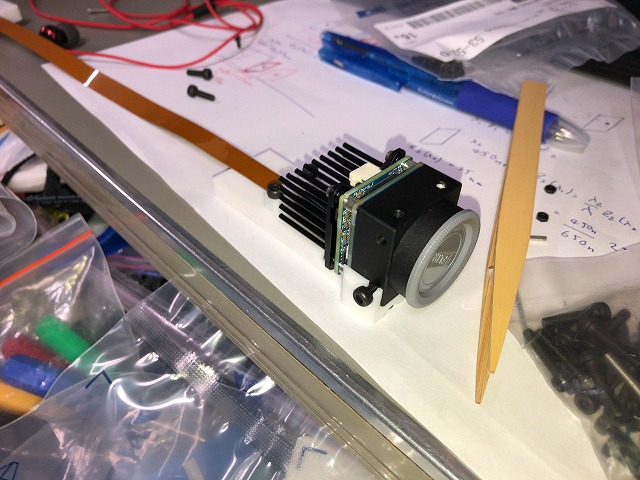
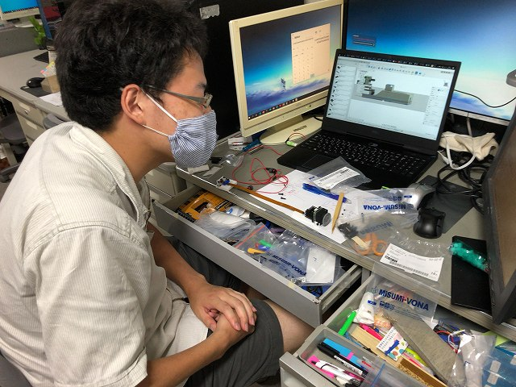
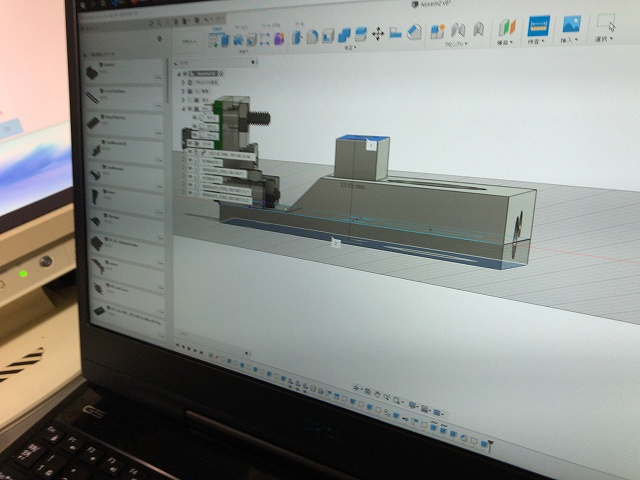
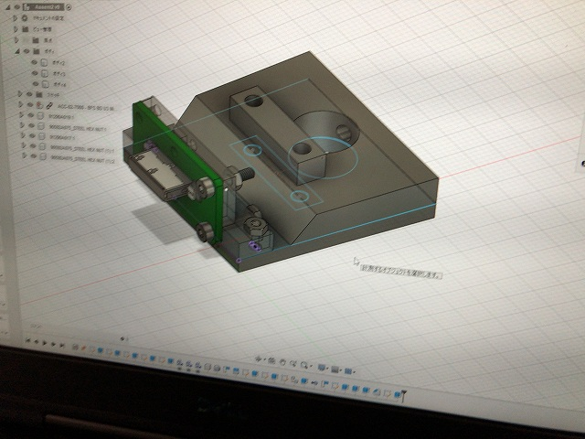
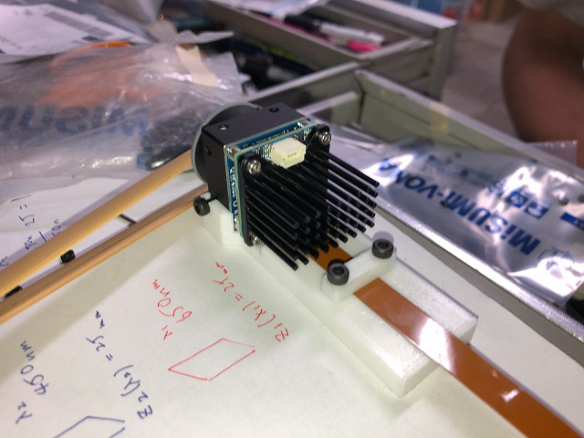

| ・ カメラモジュール (R02.08.06) | |||
2台の3Dプリンタを活用してカメラモジュールを作りました。いつもなら加工付きジュラルミンプレートをミスミに発注で、納品が1週間から10日と実質2週間待ちになります。 一方で、特に強度も精度も必要ない時なら3Dプリンタを夕方帰る前にセットすれば翌日には完成します。ダメなら作り直しも簡単ですし、精度や強度が必要になればミスミに発注すれば良いという流れ。 コロナで研究時間が10時から19時と制約があるため、試行錯誤の回数を稼ぐには3Dプリンタ導入は必然（最近、利用者が増えたのであと一台くらい増やしてもいいとおもいます） by M4 |
|||
|

青が小さい方、白が大きい方の3Dプリンタ |

モジュールのコア部 | ||
|

ロボコン出身なのでインベンタ |

精度いらない設計 | ||
|

結合はボルトで |

良い感じ | ||